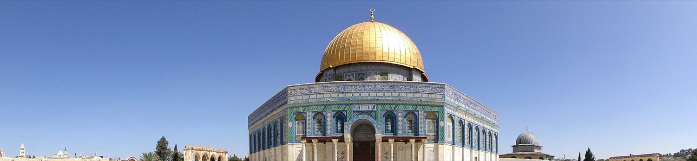
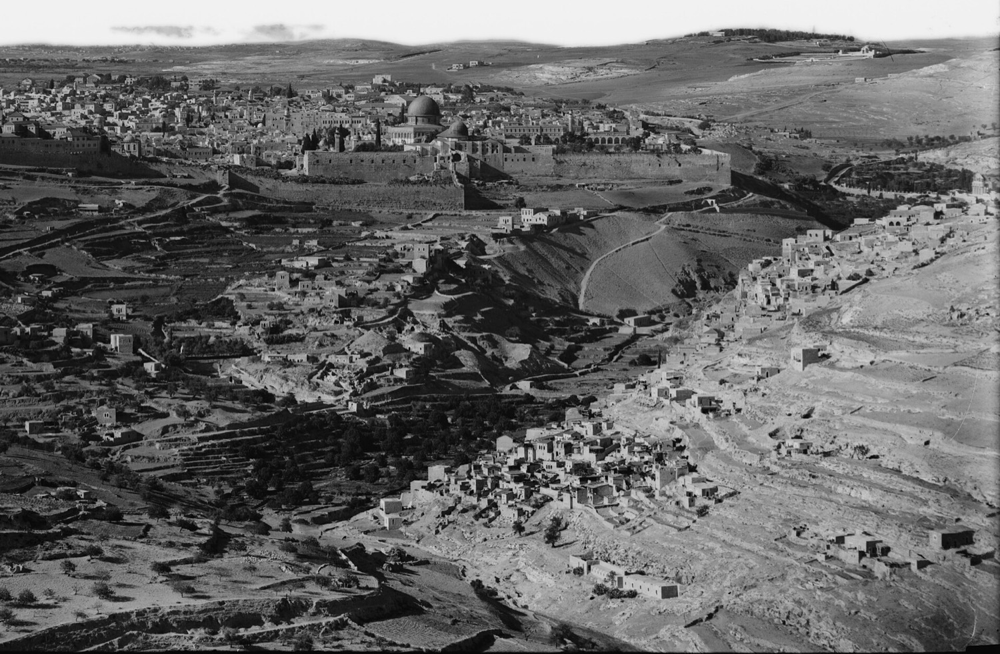
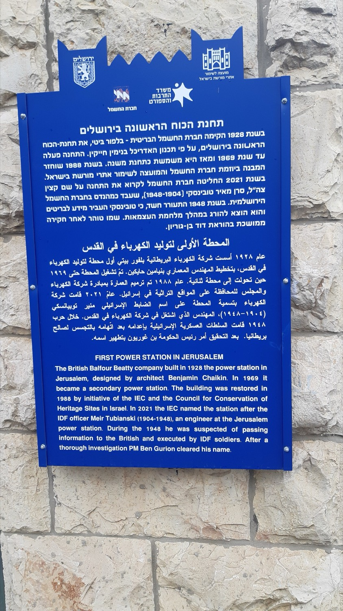
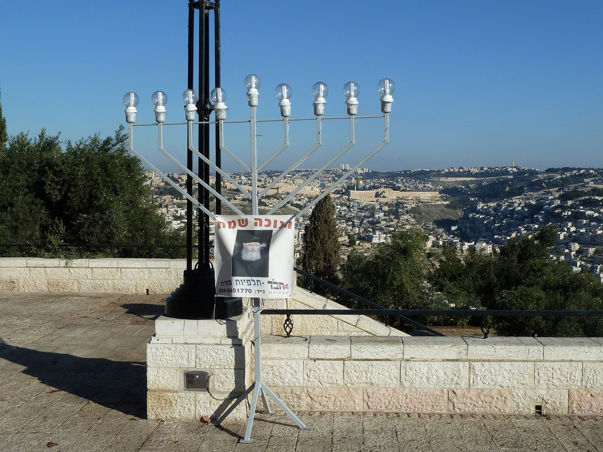
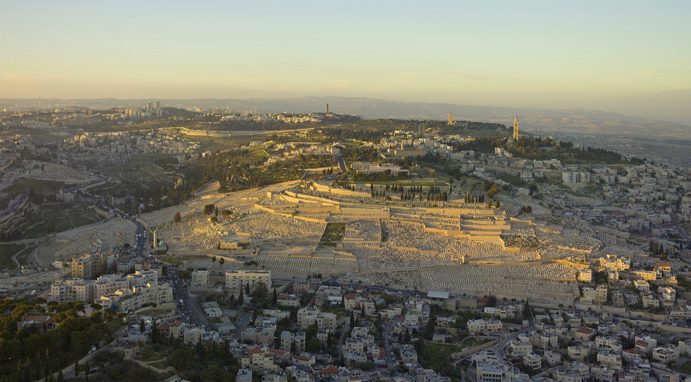
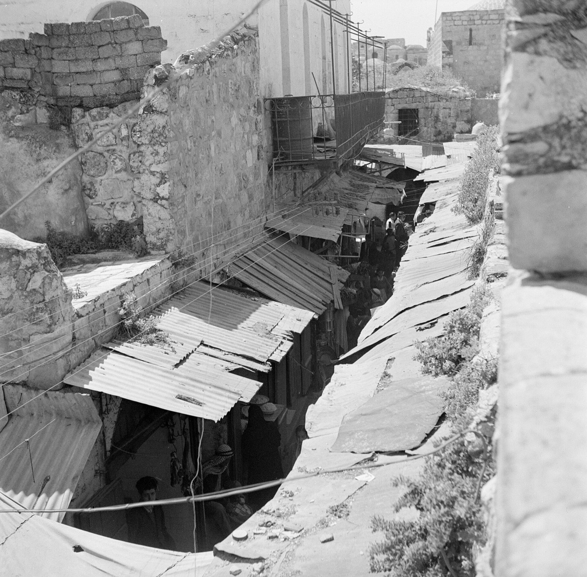
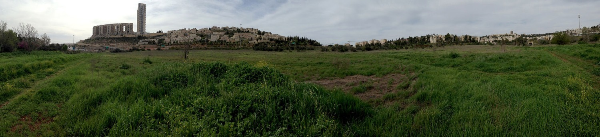
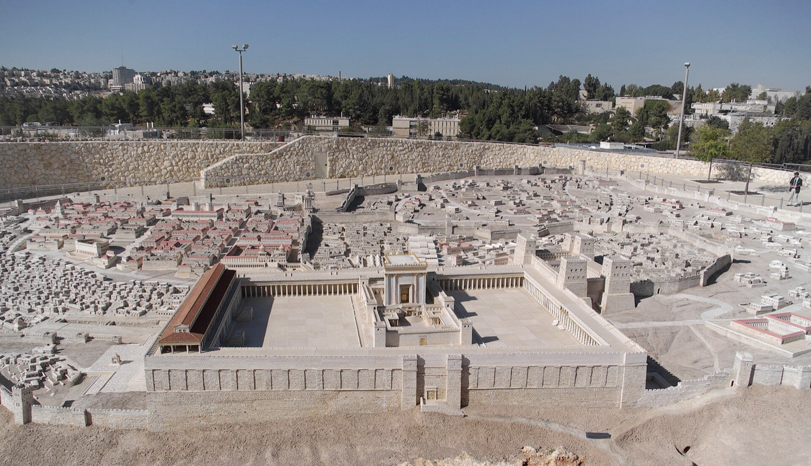
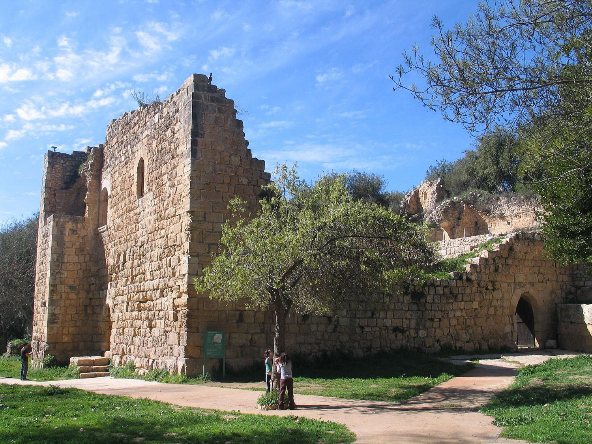

סוף שבוע קצר וגדוש בירושלים: בוקר שישי הוא יום ההרפתקה — סיור בעיר דוד והליכה במים בתוך נקבת חזקיהו בת 2,700 השנה, ואז קבלת שבת מוזיקלית. נכנסים לקרוואנים, צופים בשקיעה מהטיילת, ועושים מנגל בערב. שבת רגועה עם בחירה חופשית — העיר העתיקה, מוזיאונים או טבע — וחוזרים מערבה בכביש 1 עם עצירה בדרך. אחד הילדים צליאק, ולכן יש מדריך אוכל ללא גלוטן ייעודי. 💛
עיר דוד, הנקבה, קבלת שבת, מנגל ושקיעה מהטיילת.
בחירה חופשית: עיר עתיקה, מוזיאונים, טבע — ועצירה בדרך הביתה.
איפה אוכלים בשבת, חנויות צליאק והמנגל הבטוח.
תחרות משפחות אינטראקטיבית + סיפורים לילדים.
פודקאסטים לרכב וסרטונים לראות לפני.
כל התחנות על מפה אחת, צבועות לפי יום.
הכול קורה לפני כניסת השבת (19:07). הגיאוגרפיה לטובתכם — עיר דוד, חוות קבלת השבת, הקמפינג והטיילת במרחק ~10 דקות זה מזה בדרום־מזרח ירושלים.

חופרים את סיפור העיר העתיקה, ואז צועדים בתוך מנהרת מים בת 2,700 שנה לאור פנס — שיא היום לילדים.

פורקים, תופסים מיטות, ונרגעים. אין צ'ק־אין בשבת; צ'ק־אאוט עד ~21:30 במוצ"ש — אין לחץ.

צעידה קצרה לטיילת הסמוכה לשעת הזהב — נוף עוצר נשימה על העיר העתיקה, הר הזיתים ומדבר יהודה. שטוח וידידותי לקטנטנים.
חגיגי, רגוע, והכי קל לשליטה בצליאק (ראו מדריך האוכל). אחר כך מקלות זוהרים, משחקי קלפים והסתכלות בכוכבים. ✅ מנגל מותר — יש עמדות ייעודיות.
לישון, קפה ובוקר נינוח בקרוואנים, וילדים משחקים. ואז בוחרים מהתפריט — אין לחץ, צ'ק־אאוט עד ~21:30, ובסוף נוסעים מערבה בכביש 1, אז עצירה בדרך היא קלה.

צמוד לקמפינג, חניה חינם, שטוח וידידותי לקטנטנים. שלושה מקטעים מחוברים — טיילת האז (אמצע קלאסי), טיילת שרובר (מערב), טיילת גולדמן (מזרח). נוף, מדשאות וצל — מושלם למשחק חיפוש אוצר. תמיד פתוח וחינם.

העיר העתיקה תוססת בשבת כי השוק הערבי פתוח. נכנסים בשער יפו → מגדל דוד (מוזיאון, ✅ שבת 10:00–14:00) → יורדים דרך השוק → הכותל המערבי (תמיד פתוח וחינם).

שמורת הטבע העירונית הגדולה בישראל — עדר צבאים חופשי, שבילים קלים, מסתורי תצפית ואגמים. טבע מרגיע ומשמח ללא נסיעה גדולה.

ברמה עולמית. דגם ירושלים בימי בית שני, היכל הספר (מגילות מדבר יהודה), ואגף הנוער ההתנסותי — כולם להיטים אצל ילדים. חניה במקום. (מצוין למזגן ביום חם.)
מוזיאון מדע התנסותי "ללחוץ על כל כפתור" — מושלם ליום חם/גשום מגיל ~5. צמוד למוזיאון ישראל, אפשר לשלב.
פיקניק ומשחקים על מדשאות הטיילת או ביער השלום, וטיול בפארק המסילה — מסילת הרכבת הישנה שהפכה לטיילת עץ מהתחנה הראשונה דרך בקעה/המושבה הגרמנית. שטוח, מוצל, מצוין לילדים. תמיד פתוח וחינם. לסיים בגלידה בעמק רפאים.
יוצאים מהקמפינג בצהריים, ושוברים את הנסיעה עם עצירה מעולה בכיוון הנכון.

פנינה מוצלת על נחל כסלון: תעלות ובריכות שבהן ילדים משכשכים במים נקיים, מדשאות, שולחנות פיקניק ומצודה צלבנית. הבחירה המומלצת ליום חם — מים + צל + היסטוריה.
פארק שעשועים לגילאי 1–14: רכבות הרים, מסלול נינג'ה, קרוסלות, גלגל ענק, מכוניות מתנגשות, מתקני קפיצה וזון לפעוטות. הכי כיפי אם הילדים רוצים כיף טהור.
רוב המקומות הכשרים סגורים משישי ~15:00 עד שבת ~20:30. חלונות אכילה ריאליים:
| מקום | אזור | ללא גלוטן | פתוח בשבת? |
|---|---|---|---|
| בן עמי | בקעה | "גביע הקדוש" של הצליאק — תפריט GF נפרד + מאפייה | כנראה סגור ביום — ליל/מוצ"ש |
| גרנד קפה | דרך בית לחם | לחם GF, קערת בוקר, עוגת שוקולד GF | ⚠️ לאמת |
| אדום | תחנה ראשונה | עוגת "נמסיס" GF; לבקש מנות עיקריות GF | ✅ כן + ליל שישי |
| אבו שוקרי (חומוס) | תחנה ראשונה | כמעט הכול GF חוץ מהפיתה | ✅ סביר |
| קפית | עמק רפאים | בית קפה משפחתי עם אופציות GF | ✅ כן |
| וניליה / קרמה | תחנה / עמק רפאים | גלידה צליאק/טבעונית — ביטוח לילד שמח | ✅ כן |
🥗 צהריים בעיר העתיקה (אם בחרתם אפשרות א'): חומוס אבו שוקרי וחומוס לינא ברובע המוסלמי פתוחים בשבת — חומוס/סלטים (טבעית GF חוץ מהפיתה — הביאו פיתה GF מגלולס).
🍳 בוקר/בראנץ' (מושבה גרמנית–עמק רפאים, פתוח בשבת): קפית, גרנד קפה ובתי הקפה בעמק רפאים — ארוחות בוקר משפחתיות עם לחם GF לפי בקשה.
🥤 חטיף מהיר לילדים (בד"כ בטוח GF): בארי שייקים כמו רי־בר, פרוזן יוגורט, וגלידה (וניליה/קרמה).
🧺 פיקניק לפארקים (דרך הביתה בשבת): עין חמד / איילון–קנדה / קיף צובא — קררו מבעוד מועד: לחמניות GF + נקניק/גבינה, ירקות, פירות, חטיפים GF, יוגורט.
🌙 ארוחת מוצ"ש (אחרי ~20:30 הכול נפתח): רגע מצוין ל"גביע הקדוש" בן עמי (בקעה) או ארוחה מלאה לפני הנסיעה.
🥖 גלולס (Gluless) — חנות GF ייעודית, מאות מוצרים. סניפים בצומת אורנים ובמחנה יהודה. לחמניות/פיתות GF, חטיפים, פריטי בוקר ועוגיות למנגל ולדרך.
🧁 ברקת — קונדיטוריית GF, יד חרוצים 14 — לחם/מאפים ללא גלוטן.
בקמפינג יש עמדות מנגל ייעודיות, מטבח שדה משותף, שולחנות מוצלים, שקעי חשמל ומטבחון.
✅ טבעית ללא גלוטן: בשר/עוף טרי או במרינדה (לוודא שאין סויה/קמח), קבב בלי פירורי לחם, ירקות, תירס, תפו"א בנייר כסף, סלטים (בלי קרוטונים), אורז.
🥖 הביאו לחמניות/פיתות GF (גלולס) לילד/ה והקפידו על הפרדה פיזית.
🛡️ מניעת זיהום צולב: צולים את מנות ה־GF ראשונות על נייר כסף נקי; צלחת, מלקחיים וכף הגשה נפרדים; להרחיק לחם/פירורים רגילים.
🍫 קינוח GF קל: פירות, מרשמלו, עוגיות GF, גלידה.
🕯️ שבת בירושלים 19–20/6: כניסת שבת שישי 19:07 · צאת שבת שבת ~20:30 · פרשת חוקת.
🏕️ צ'ק־אין: שישי 13:00 עד שעתיים לפני שבת (~17:00). אין צ'ק־אין בשבת. צ'ק־אאוט: מוצ"ש עד שעה אחרי צאת השבת (~21:30). ללא כלבים, ללא עישון. ✅ מנגל מותר.
🏛️ עיר דוד: שישי 08:00–14:00 (כניסה אחרונה לנקבה ~12:30) · שבת סגור. 👉 כל פעילות עיר דוד חייבת להיות בבוקר שישי.
🎟️ קודי הנחה: יש לכם קופונים במייל ההזמנה לסיורים המודרכים ולאומגה — הזינו אותם בקופה באתר עיר דוד.
| תחנה | Waze / כתובת | חניה |
|---|---|---|
| קמפינג | קמפינג יער השלום | ✅ חינם במקום |
| עיר דוד (שישי) | עיר דוד / שער האשפות | חניון גבעתי (בתשלום, מוגבל) — מוקדם; עודף: חניון הר ציון (~9 דק' הליכה) |
| קבלת שבת – חווה בגיא | ליד התחנה הראשונה | ליד התחנה הראשונה (~17₪/יום) או רחוב |
| טיילת | טיילת ארמון הנציב | ✅ חינם (לא ברחוב דניאל ינובסקי) |
| עיר עתיקה (שבת) | שער יפו | חניון קרתא — ⚠️ לאמת פעילות בשבת |
| עמק הצבאים | עמק הצבאים | חניון כניסה (מוגבל) — מוקדם |
| מוזיאון ישראל / בלומפילד | דרך רופין 11 / שד' המוזיאונים 3 | חניוני המקום (גבעת רם) |
| עין חמד (כביש 1) | גן לאומי עין חמד | חניון הגן הלאומי |
| פארק איילון–קנדה | פארק קנדה / עין איילון | ✅ חניון חינם |
חוברת כיף למשפחות סולומון וצמרת־איגר 🎒 — לדרך, ליד המנגל, או תוך כדי הסיור.
מי שמוצא ראשון — נקודה! (אפשר לשחק תוך כדי הביקור). לוחצים כדי לסמן.
פודקאסטים לנסיעה 🚗 וסרטונים לצפייה לפני — כדי שהילדים יגיעו לעיר דוד עם רקע ויתחברו הרבה יותר. ⚠️ שמות עשויים להשתנות — חפשו את השם ב־Spotify / Apple / YouTube.
סדרת פודקאסט למשפחה (~7 פרקים) על דוד המלך, בית המקדש הראשון, המצור של אשור ובבל, וגילוי העיר מחדש. הקרינו פרק בנסיעה — והילדים ייכנסו לנקבה כשהם כבר "מכירים" את הסיפור.
סיפורי התנ״ך מותאמים לילדים — כולל ספר מלכים (דוד, שלמה, חזקיהו) שמתחבר ישירות לעיר דוד.
ממציאים, מנהיגים ומתקני עולם — היסטוריה בגובה העיניים. מצוין לנסיעה כללית.
פרקים על היסטוריה יהודית וירושלים — מתאים מגיל 10+ ולהורים שרוצים רקע מעמיק.
אוסף מרתק — כולל איך הילד יעקב אליהו גילה את כתובת השילוח, ולמה הנקבה פלא הנדסי.
איך נראית ההליכה בתוך הנקבה עם המים — מצוין כדי להחליט מי הולך רטוב ומי יבש.
סרטונים שמסבירים את הממצאים הארכיאולוגיים בעיר דוד בצורה נגישה.
אנימציה שממחישה איך נראה בית המקדש — מתחבר לשלמה המלך ולכותל.
כל התחנות על מפה אחת. שימו לב כמה קרוב הכול בדרום־מזרח ירושלים. לחצו על סמן לקישורי ניווט.
מפה: © OpenStreetMap contributors · Leaflet. דורש חיבור לאינטרנט.